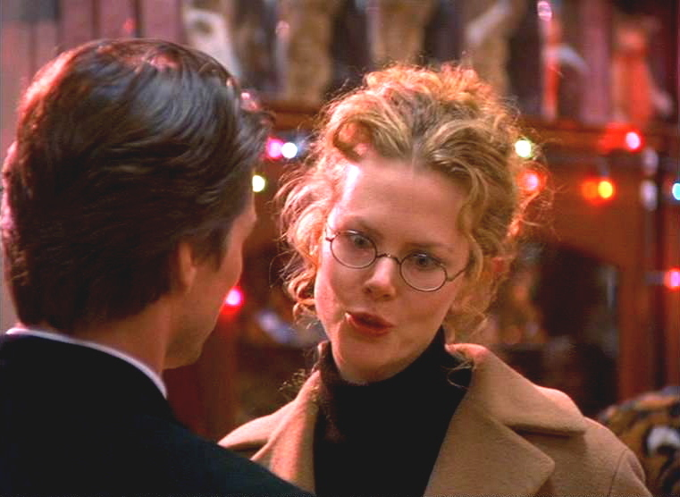

Eyes Wide Shut
Kubrick Week kick off. My wife and I were inspired to spend a week watching Stanley Kubrick movies. As far as I can tell we are working in order of 'most Tom Cruise' to 'least Tom Cruise'.
My wife and I are in the viscous throws of a full blown Netflix documentary obsession. We don’t even screen these things anymore. We just mash play and plunge head first into a three hour film about God-knows-whatever we selected. Our queue is the most disharmonious thing I have ever seen.
Tonight we watched the documentary Room 237 . It was a film outlining fan theories for The Shining . Marissa and I were inspired by all the crazy things people pulled out of this movie. If you enjoy cinematic forensics , it’s worth a watch.
We were particularly amused by one viewers extrapolation of the whole movie as an expression of guilt for Kubrick’s alleged participation in faking the US moon landing.
But I’d rather not linger on it. We wrapped up the documentary and got to thinking about the last time we watched The Shining . We both felt we had taken it for granted.
So Marissa and I committed to watching every Kubrick movie we had access too. Without further ado , here is our little summary of Eyes Wide Shut.
Alex's Thoughts
A racy start to Kubrick Week, 2014. There was more nakedness in the first 10 minutes of the film than in the locker room of my local Planet Fitness . With no doubt, we had to pause the movie and project our doubts about what we committed to do. I was also a little embarrassed that I had proudly tweeted Hey everyone! I’m watching Eyes Wide Shut! I had no idea the movie would be such a breast-fest .
I’m not a Tom Cruise fan either, and what I know about Kubrick is that he has really high standards. That puzzled me at first, but I think I can pardon his odd choice for a two hour, thirty-nine minute front man.
Clearly sex is an important theme in the film. Beyond sex, infidelity . Bill is haunted by visions of his wife cheating on him with a sailor, and it drives him to explore his own promiscuity. He stumbles into a weird orgy club and quickly finds he is in over his head.
In the end, something as small as the mask he wore conspicuously left on his pillow beside his sleeping wife reduces him to crying (the ugly kind). This is a long way to a fall for the sleek doctor we met at the beginning of the movie chatting of super models. I took from it this - never underestimate evil. No matter what you think you are capable of, never dismiss the idea that it could come back to terrify you.
There were more clues that lay in the password to the weird orgy party - Fidelio . Wikipedia says this is Beethoven’s only opera. The story goes that a cocky politician is made a political prisoner, and his wife has to disguise herself as a prison guard to rescue him. The opera is a triumph to a wife’s strength and love . I could see a parallel to Beethoven’s version when Bill’s wife forgave with the strength that she did.

Figure 1: Alright, I forgive you. Just no more weird orgies.
All in all, weird way to start off the week, and I am disappointed there wasn’t more Nazi allusions and Moon landing related conspiracies. I guess those will have to wait.
Alex's Rating
Intriguing, but racy and a little drawn out. Also Tom Cruise ugly-cries.
8.5/10
Marissa's Thoughts
One of my favorite perks about married life is that we introduce each other to a lot of things that we may not have normally tried on our own. I will be the first to admit that my taste in movies is not particularly refined. I normally like just about every movie I see, but Alex has a much better movie palate and has been able to introduce me to some truly fantastic movies. One of the more recent movies we watched together that I hadn’t previously seen was the Shining. I know i’m a little late with the classics, but of course I thought it was great. After watching a documentary about some of the subliminal messages that may be hidden within the Shining, called Room 237, we were inspired to continue watching some of Stanley Kubrick's films, starting with Eyes Wide Shut.
This movie struck me as being extremely unique. Normally movies are either very relatable or not relatable at all. This movie seemed to fall somewhere in the middle. Off of the top of my head I cannot think of any other movies that seem to fall into the same space. Eyes Wide Shut was relatable because it focused on a struggle that a large majority of people have in one way or another at some point in their lives: faithfulness. This could be faithfulness to a spouse, friend, faith, or anything. Tom Cruise's’ character struggles with faithfulness with his wife but in a very ‘real’ way. He starts out thinking that he was the guy who could NEVER see himself falling into that trap and was even encouraged in this perspective by his wifes’ own confessed problems with faithfulness to him. As the story continues this ‘perfect guy’ perspective gives him some “self deserved” leniency to explore more and more into some pretty shady situations. This is where the story gets a little unrelatable. Some of these situations he finds himself in are just a few fries short of a sci-fi happy meal, if you catch my drift. But they are still realistic and pretty interesting.
Once the movie was over I thought more about the story and I was pretty won over by what I personally thought that it was trying to convey. I think that we always see ourselves as the people who won’t mess up. Obviously none of us try to seek out situations that will get us in trouble. Yet in one way or another we always will end up in sticky situations at some point, none of us are perfect. But the specific perspective that this movie pulled on is that the slippery slope into situations you never thought you would be in will always seem sci-fi to you. This is because you never imagined yourself ever getting to this point because we naturally are optimistic about our abilities to make good decisions. So after thinking about this I think that Kubricks’ point here was to try to provide a bridge of relatability. By watching this story and understanding each step that brought Tom Cruise to the point where he thought, “oh sh**, how did I get here?” but still seeing how crazy of a point it lead him too, may help us to understand that the same process can happen to us. Overall, I really thought that this movie was probably an 8/10. It is definitely rated R for a reason but it was very clever in helping us see that we are not immune to making bad decisions. Hopefully understanding this can just be one more weapon in our arsenal in decreasing the number of bad choices we end up actually making.
Marissa's Rating
An appropriately rated R movie that plays on something that we all face at some point in a creative and intriguing way, overall a good watch
8/10